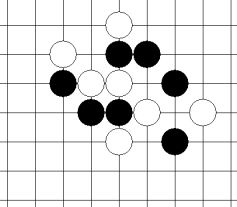

一道不错的VCT题
首页
习题专区
#1 一道不错的VCT题 作者：二十七刀 发表时间：2009-3-9 9:45:05
支持天羽老师版块
答案下周公布
#2 Re:一道不错的VCT题 作者：t周 发表时间：2009-3-9 11:35:19
=======上图对应的爱五子棋谱代码如下，以便你拆解：========
h8h9j10i9g9i7i10g10k9i11i8j8k7l8k8k10l7
======================================================
#3 Re:一道不错的VCT题 作者：下棋思思 发表时间：2009-3-9 11:41:40
疏星
=======上图对应的爱五子棋谱代码如下，以便你拆解：========
h8h9j10i9g9i7i10g10i8j8k9i11k7l8
======================================================不像是VCT呢！进攻一方落子成活三、冲四（嵌四）或者下手四三，另一方必须应手直至进攻方胜。
［本站用户 逆刃 于 2009-3-9 11:49:12 花5个金币送您鲜花一朵］
#4 Re:一道不错的VCT题 作者：游戏人间 发表时间：2009-3-9 13:09:21
这个不是VCT［本站用户 二十七刀 于 2009-3-9 16:22:10 花5个金币送您鲜花一朵］
#5 Re:一道不错的VCT题 作者：二十七刀 发表时间：2009-3-9 16:21:30
晕,混点威望的,大鱼老师来了,给捅了一刀
［本站用户 有志青年 于 2009-3-9 16:25:03 花15个金币砸了你1个臭鸡蛋]
#6 Re:一道不错的VCT题 作者：小帮帮 发表时间：2010-4-3 14:00:39
能不能杀，我还有疑问呢,vct？
#7 Re:一道不错的VCT题 作者：岑小鱼 发表时间：2010-4-3 14:03:37
非VCT好像见过3种方式 VCT不知道